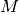
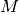

Dirichlet condition brick¶
The aim of the Dirichlet condition brick is to prescribe a Dirichlet condition on a part of the boundary of the domain for a variable of the model. This means that the value of this variable is prescribed on the boundary. There is three versions of this brick (see also the section Nitsche’s method for dirichlet and contact boundary conditions). The first version prescribe the Dirichlet thank to a multiplier. The associated weak form of the term is the following:
where  is the variable,  is the space of multipliers,
is the variable and
is the variable,  is the space of multipliers,
is the variable and  the Dirichlet boundary. For this version, an
additional variable have to be added to represent the multiplier. It can be done
directly to the model or thanks to the functions below. There are three functions
allowing to add a Dirichlet condition prescribed with a multiplier. The first one
is:
the Dirichlet boundary. For this version, an
additional variable have to be added to represent the multiplier. It can be done
directly to the model or thanks to the functions below. There are three functions
allowing to add a Dirichlet condition prescribed with a multiplier. The first one
is:
add_Dirichlet_condition_with_multipliers(md, mim, varname,
multname, region,
dataname = std::string());
adding a Dirichlet condition on varname thanks to a multiplier variable multname on the mesh region region (which should be a boundary). The value of the variable on that boundary is described by the data dataname which should be previously defined in the model. If the data is omitted, the Dirichlet condition is assumed to be an homogeneous one (vanishing variable on the boundary). The data can be constant or described on a FEM. It can also be scalar or vector valued, depending on the variable. The variable multname should be added to the model by the method add_multiplier. The function returns the brick index in the model. The second function is:
add_Dirichlet_condition_with_multipliers(md, mim, varname,
mf_mult, region,
dataname = std::string());
The only difference is that multname is replaced by mf_mult which means that only the finite element on which the multiplier will be built is given. The function adds itself the multiplier variable to the model. The third function is very similar:
add_Dirichlet_condition_with_multipliers(md, mim, varname,
degree, region,
dataname = std::string());
The parameter mf_mult is replaced by an integer degree indicating that the multiplier will be built on a classical finite element method of that degree.
Note, that in all the cases, when a variable is added by the method add_multiplier of the model object, the mesh_fem will be filtered (thank to a partial_mesh_fem_object in order to retain only the degrees of freedom having a non vanishing contribution on the considered boundary.
Finally, the variable name of the multiplier can be obtained thank to the function:
mult_varname_Dirichlet(md, ind_brick);
where ind_brick is the brick index in the model. This function has an undefined behavior if it applied to another kind of brick.
The second version of the Dirichlet condition brick is the one with penalization. The function allowing to add this brick is:
add_Dirichlet_condition_with_penalization(md, mim, varname,
penalization_coeff, region,
dataname = std::string(),
*mf_mult = 0);
The penalization consists in computing the mass matrix of the variable and add it
multiplied by the penalization coefficient to the stiffness matrix.
The parameter mf_mult (a pointer to a getfem::mesh_fem object) is optional. It allows to weaken the Dirichlet condition for locking situations. In that case, the penalization matrix is of the form where  is the “mass matrix” on the boundary between the shape functions of the variable varname and the shape function of the multiplier space.
The penalization coefficient is added as a data of the model and can be
changed thanks to the function:
is the “mass matrix” on the boundary between the shape functions of the variable varname and the shape function of the multiplier space.
The penalization coefficient is added as a data of the model and can be
changed thanks to the function:
change_penalization_coeff(md, ind_brick, penalisation_coeff);
The third version of the Dirichlet condition brick use a simplification of the linear system (tangent linear system for nonlinear problems). Basically, it enforces a 1 on the diagonal components of the lines corresponding to prescribed degrees of freedom, it completes the lines with some zeros (for symmetric problems, it also complete the columns with some zeros) and it adapts the right-hand side accordingly. This is a rather simple and economic way to prescribe a Dirichlet condition. However, it can only be applied when one can identify the degrees of freedom prescribed by the the Dirichlet condition. So, it has to be use with care with reduced finite element methods, Hermite element methods and cannot be applied for a normal (or generalized) Dirichlet condition on vectorial problems. The function allowing to add this brick is:
add_Dirichlet_condition_with_simplification(md, varname, region,
dataname = std::string());
If dataname is ommited, an homogeneous Dirichlet condition is applied. If dataname is given, the constraint is that it has to be constant or described on the same finite element method as the variable varname on which the Dirichlet condition is applied. Additionnaly, If dataname is constant, it can only be applied to Lagrange finite element methods.
Generalized Dirichlet condition brick¶
The generalized Dirichlet condition is a boundary condition of a vector field u of the type
where  is a matrix field. The functions adding the corresponding bricks
are similar to the ones of the standard Dirichlet condition except that they need
the supplementary parameter Hname which gives the name of the data corresponding
to . This data can be a matrix field described on a scalar fem or a
constant matrix.
is a matrix field. The functions adding the corresponding bricks
are similar to the ones of the standard Dirichlet condition except that they need
the supplementary parameter Hname which gives the name of the data corresponding
to . This data can be a matrix field described on a scalar fem or a
constant matrix.
add_generalized_Dirichlet_condition_with_multipliers(md, mim, varname,
multname, region,
dataname, Hname);
add_generalized_Dirichlet_condition_with_multipliers(md, mim, varname,
mf_mult, region,
dataname, Hname);
add_generalized_Dirichlet_condition_with_multipliers(md, mim, varname,
degree, region,
dataname, Hname);
add_generalized_Dirichlet_condition_with_penalization(md, mim, varname,
penalization_coeff, region,
dataname, Hname);
Pointwise constraints brick¶
The pointwise constraints brick is a Dirichlet condition like brick which allows to prescribe the value of an unknown on given points of the domain. These points are not necessarily some vertex of the mesh or some points corresponding to degrees of freedom of the finite element method on which the unknown is described.
For scalar field variables, given a set of points , the brick allows to prescribe the value of the variable on these points, i.e. to enforce the condition
where is the scalar field and the value to be prescribed on the point .
For vector field variables, given a set of points , the brick allows to prescribe the value of one component of the variable on these points, i.e. to enforce the condition
where  is the vector such that represent the component to be prescribed.
is the vector such that represent the component to be prescribed.
The brick has two versions: a penalized version and a version with multipliers. The call is the following:
add_pointwise_constraints_with_penalization(md, varname, penalisation_coeff,
dataname_pt, dataname_unitv = std::string(),
dataname_val = std::string());
add_pointwise_constraints_with_given_multipliers(md, varname, multname,
dataname_pt, dataname_unitv = std::string(),
dataname_val = std::string());
add_pointwise_constraints_with_multipliers(md, varname, dataname_pt,
dataname_unitv = std::string(), dataname_val = std::string());
respectively for the penalized version, the one with a given multiplier fixed size variable and the one which automatically adds a multiplier variable of the right size to the model. The data dataname_pt, dataname_unitv and dataname_val should be added first to the moel. dataname_pt should be a vector containing the coordinates of the points where to prescribed the value of the variable varname. It is thus of size where  is the dimension of the mesh. dataname_unitv is ignored for a scalar field variable. For a vector field variable, it should contain the vector . In that case, it size should be
is the dimension of the mesh. dataname_unitv is ignored for a scalar field variable. For a vector field variable, it should contain the vector . In that case, it size should be  where
where  is the dimension of the vector field. dataname_val is optional and represent the right hand side, it should contain the components . The default value for is 0.
is the dimension of the vector field. dataname_val is optional and represent the right hand side, it should contain the components . The default value for is 0.
This brick is mainly designed to prescribe the rigid displacements for pure Neumann problems.

目次
前のトピックへ
次のトピックへ
Source term bricks (and Neumann condition)
Download
Main documentations
- GetFEM++ User documentation
- Python Interface
- Matlab Interface
- Scilab Interface
- Gmm++
- GetFEM++ project